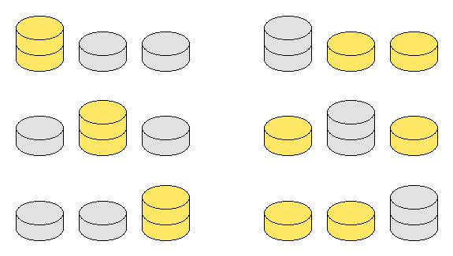

Gary and Sally play a game using gold and silver coins arranged into a number of vertical stacks, alternating turns. On Gary's turn he chooses a gold coin and removes it from the game along with any other coins sitting on top. Sally does the same on her turn by removing a silver coin. The first player unable to make a move loses.
An arrangement is called fair if the person moving first, whether it be Gary or Sally, will lose the game if both play optimally.
An arrangement is called balanced if the number of gold and silver coins are equal.
Define $G(m)$ to be the number of fair and balanced arrangements consisting of three non-empty stacks, each not exceeding $m$ in size. Different orderings of the stacks are to be counted separately, so $G(2)=6$ due to the following six arrangements:

You are also given $G(5)=348$ and $G(20)=125825982708$.
Find $G(9898)$ giving your answer modulo $989898989$.